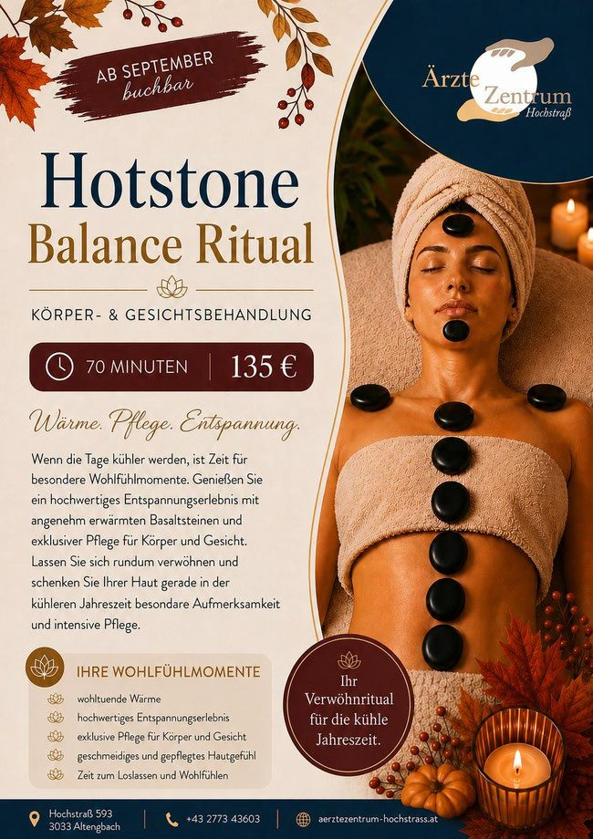

Andreas Schweighofer
Dipl. Physiotherapeut
Sportphysio-, Faszien- und Lymphtherapeut.
Ordinationstage: DI, MI, DO, FR · Telefon +43 664 530 51 10
Fokus Körper, Fokus Ernährung, Fokus Psyche – und ein Kosmetikstudio mit Schwerpunkt Hautgesundheit. Alle Termine laufen über unser Rezeptionsteam.
Dipl. Physiotherapeut
Sportphysio-, Faszien- und Lymphtherapeut.
Ordinationstage: DI, MI, DO, FR · Telefon +43 664 530 51 10
Heilmassage
Heilmassagen und Massagen zur Gesundheitsförderung. Über aktuelle Kapazitäten informiert Sie gerne unser Rezeptionsteam unter 02773 43603.
Termin nach Vereinbarung: DO & FR
Cranio-Sacrale-Körperarbeit · Yoga, Atem & Meditation
Im Team seit Februar 2025. Zertifizierter Yogalehrer (E-RYT 500 Yoga Alliance), Yogalehrer an der Wiener Yogaschule, Cranial Energetics® Praktiker und Trainer, integriertes Wissen aus Yin Yoga, Yoga Nidra, Rückenyoga, Seniorenyoga und Kundaliniyoga – mit über 20 Jahren Erfahrung als Körpertherapeut und Entspannungstrainer.
Gruppenabende: mittwochs · Einzelsitzungen nach Vereinbarung
Ernährungswissenschafterin und Diätologin im Ärztezentrum Hochstraß.
Ernährungsberatung und Ernährungstherapie mit BIA-Messungen und Schwerpunkt Darmgesundheit. Termine vereinbaren Sie über unser Rezeptionsteam unter 02773 43603.

Systemische Psychotherapeutin im Ärztezentrum Hochstraß.
Einzel-, Paar-, Kinder- und Familientherapie. Schwerpunkt: Psychotherapie bei Post- und Long-Covid.
Psychische Belastungen zeigen sich unterschiedlich. Schulstress kann belastend sein – Psychotherapie bietet Unterstützung, wenn alles zu viel wird. Seien Sie achtsam mit sich und Ihrem Umfeld und holen Sie sich frühzeitig Unterstützung.
Staatlich geprüfte Kosmetikerin mit Schwerpunkt Hautgesundheit – neu im Team, Termine ab sofort buchbar.
Körper- und Gesichtsbehandlung, ab September buchbar. Wenn die Tage kühler werden, ist Zeit für besondere Wohlfühlmomente: ein hochwertiges Entspannungserlebnis mit angenehm erwärmten Basaltsteinen und exklusiver Pflege für Körper und Gesicht.
Ihre Wohlfühlmomente: wohltuende Wärme, hochwertiges Entspannungserlebnis, exklusive Pflege für Körper und Gesicht, geschmeidiges und gepflegtes Hautgefühl, Zeit zum Loslassen und Wohlfühlen.
Ab Ende September beziehungsweise Anfang Oktober starten die Microneedling-Termine wieder. Abendtermine sind sehr gefragt, daher empfiehlt sich eine frühzeitige Terminplanung. Bei einer 4er- oder 6er-Kur finden die Behandlungen im Abstand von etwa vier Wochen statt – reservieren Sie am besten gleich zu Beginn Ihre Folgetermine, damit Ihr gewünschter Rhythmus eingehalten werden kann.



Ein Interview mit unserer staatlich geprüften Kosmetikerin Renée Schüttengruber in „Niederösterreich heute“: Fruchtsäure-Tipps für ein besseres Hautbild.
Zum ORF-Interview auf on.orf.at
Im Herbst 2026 erscheint das Buch „Hautkompass – Verstehe, was deine Haut wirklich braucht“. Renée Schüttengruber, staatlich geprüfte Kosmetikerin und Kräuterpädagogin, erklärt fundiert und verständlich, wie Haut funktioniert, wann Pflege wirksam ist und welche Inhaltsstoffe tatsächlich Sinn machen: die 20 wichtigsten Wirkstoffe, verschiedene Hauttypen, der gezielte Einsatz von Säuren, der richtige Lichtschutz sowie eine individuell passende Pflegeroutine. Ergänzend führt Eunike Grahofer in die Welt der Pflanzen ein und stellt 20 Heilpflanzen mit ihren Anwendungen vor.